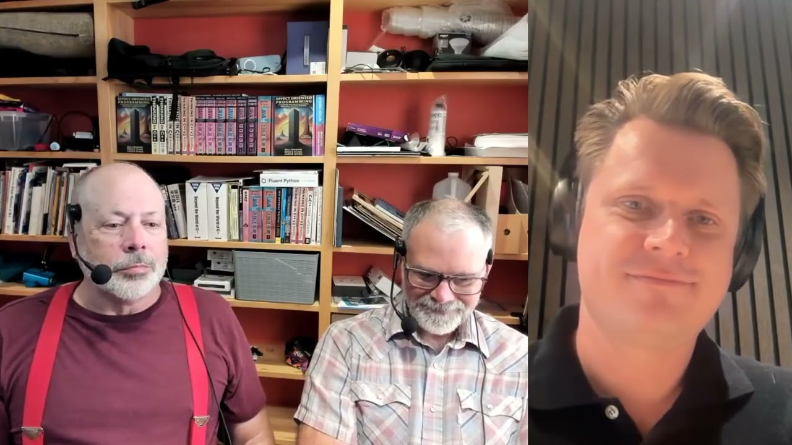

Effect Oriented Python with Sune Debel

About this episode
In this episode we chat with Sune Debel about his Stateless library which brings Effect Oriented Programming to Python. Prior attempt at a Scala ZIO port to Python: pfun
Resources & links
Transcript
Generated automatically by Spotify, so expect the odd misheard word. Select a timestamp to play from there. Download (.srt)
Read the transcript
0:01 Welcome to Happy Path Programming. I'm Bruce Eckel. I'm James Ward, welcome everyone to happy path programming. We're. Back after a while because you've been traveling. It's just, you know, that's the life of developer advocate on the road. Do they? Still do that? They still do the developer advocate thing, huh? Yeah, you know, now I just try to convince agents. I see you don't. You don't have to interact with actual. People now I'm really a agent advocate, OK, yeah, yeah. But but, you know, the human connection going to in person events is actually become, I think, more valuable because we, I don't know, we as humans like to connect in in person. Nice. And here we are on a room.
0:47 Well, we're together. But our guest today, SUNY, Soon, soon, soon. SUNY. Danish right And so? What's your last name? Table, Yeah, TEPEL, that's that's not easier either. So it's yeah, it's a real tough one. Sorry about. That sorry, my Danish is not awesome, but we've got a good one because. So a quick little background story. So this was like 3 weeks ago you and I were got together on our weekly get together. I was actually in town and yeah, tech, our tech night and which used to be a book night and now it's just now it's. Like I'm not sure what it is anymore. We're, we're still figuring that out, still figuring that out. But we. Have we officially given up on TypeScript?
1:33 I know nobody wants to do it so. I, I we. The book feels so close, like maybe that's I'm imagining it like the hard parts were kind of done maybe versus like just really we could just but I kind of want to finish the TypeScript effect on our programming book. OK, maybe I just do I. Mean just. We could just think. You and Bill are done with TypeScript. I don't want to know about it but any more than I have. But the the pros could be done mostly with Claude I think. And it would probably still have value. Oh yeah, yeah, I think so. So we'll see on that. But OK, so we were together, you and I and we're like, let's just ask the AI what the if it can find anything related to effect oriented programming in Python, because you've been doing a lot of Python, you've been updating coming back to thinking in Python Your your book that you Yeah.
2:29 There's a little bit of story behind that because I started it in 2008 and I abandoned it. Like I wrote a blog post to sing I, This is why I'm not doing this book. It's just, I don't know what what I said. It was too hard, I guess. And then a couple months ago I thought, well, let's just see what Claude can do with it. And then I started pouring all of my presentations at Pycon and other, you know, all the research that I'd done, I'd poured it into it and I said, OK, you know, put this in and all the stuff from the design patterns work. And I just kept adding to it and it kept doing a good job. And the tooling, it did a really excellent job for me for. Tooling. You actually have the code and then you have it run and then you capture the output and which is validation. Yes, Oh yeah, everything.
3:22 So everything is run and validated and run through all the type checkers and. Because it sure is annoying when there's code in a book or anywhere. Without it, you know any kind of example code and then it doesn't actually work. Oh, yeah, like, yeah, that's, that's basic. And then I had it do this thing that I've been wanting forever and I have made multiple attempts at it, which is to put the output directly in the listings. And I know you can do that with doc test, but it just looked too ugly to me. And so and it did it and it works, right. And if there's any little hiccups, it fixes it. It's like, yeah, I couldn't. I would never have been able to write this book and certainly never have made it to where I wanted to. So that said, we saw we started looking at your library. Well, we, so the AI helped us find it. Oh yes, we, I don't know.
4:15 We, you know, probably could have just searched Google or something, but but I don't know. But anyway, we're like, we asked AI like help us find some things that are kind of effect oriented in the Python world. And for me, I, I'm kind of, I've always been kind of a Python skeptic because, you know, I got total functional programming pilled and, and so there wasn't really the effect oriented stuff in Python that I, that I, that would make me want to use Python. And so, so we're like, hey, you know, let's see what's out there. And then we found stateless so. We found Stateless and then Monday, because I knew we had this podcast coming up, I thought, well, I need to spend time looking at this. And I started looking at the documentation and I thought, why don't I just have Claude write me a chapter? We'll just put it tentatively, put it at the end of the book, and this is Thinking in Python And you can find it at Thinking on in python.com.
5:20 I'm not saying it's done, but it's still it's usable. It's usable. Yes, I'm there. There needs work on it. But I mean, yeah, you know, it's workable the way it is. So you've got a few chapters that kind of lead up to stateless and then and then there's a stateless. There's a whole section on functional programming. And then right before Stateless, initially the generators were in the stateless chapter and then I broke them out because turns out that's easy to do. You just tell it to do that and it does it. And so there's a generators like where it goes into depth because Stateless uses generators very intimately. And then now there are two chapters, one which is the stateless introduction and the other is Stateless in practice, which has as many examples as I could pull from the effect oriented programming book and other things.
6:16 And so, yeah, it's a whole, it's a whole deal, but I have not combed through it and, you know, rewritten the, the the stuff that. You haven't deslopified it yet. Well, I mean, everything works and the prose is, you know, tolerable. But I often come and I find some sentence, I'm going, what does this mean? And then it will, it will fix it and it will then go explain why the, you know, there was a dangling pronoun or something. And it explains that why the sentence didn't work, why it was confusing and but then it fixes it. So I haven't done all that with this. Yeah, but. So for soon, tell us about what is stateless this library that we've been.
7:04 But also, what's your background? Where, where, like where did you go to school and how did you end up? And yeah. Definitely, yeah. And thanks for that chapter in thinking in Pythons 2. I think that is 2 chapters. Yeah, I think that is that's probably the most comprehensive documentation that exists on this library so far, even more comprehensive than what's in the read me. So that that that was entertaining to see. I mean, I skimmed through it. I didn't read it. I mean, I only told you. End to end tonight. Yeah. But nothing stood out to me so far. I think it looked, it looked pretty convincing. So yeah, right. Good job with that so far. But yeah, my background is it's kind of mixed. I, my education is, is mixed also partly as a software engineer from the IT University of Co Maiden. And then I did my masters in kind of data science, very focused on natural language processing at the University of Copenhagen after that.
8:09 And that was, that was something like 10 years ago that I, that I did that. And then I've been working as a kind of very hands on data scientist, sometimes natural language type engineer at various companies, but mostly at startups and scale UPS where part of that job description was also data analysis and data engineering. So that's. That's the reason through. Yeah, I've been doing a lot of Python, yeah, for sure. But also in periods a lot of Scala, which is where I I was exposed to CEO which really caught my attention as something that proved to be very useful for writing real business applications. Was that your first exposure to effect? I mean, I, I probably saw some Haskell code in, in university, but I never really applied it to any real problems. And I don't think I really got it the, the, the like the benefits of it.
9:12 When I, when I saw it in university, it wasn't really until I, I really tried it in practice with CEO that, that the, the penny sort of dropped for me off. Why is it? What is actually the, the tangible benefits of a system like this? I mean, I'd also have some experience hobby level with Elm that I enjoyed a lot where you get some of the same benefits in a more limited or maybe less flexible way, very intentionally by by even. I think so. Yeah, Elma is such a good way for people to like start to dip their toe into the waters of of effect training, programming things, you know, had, you know, immutability and, you know, a lot of the. Did it have effects?
10:01 I thought it was just functional. Maybe. Maybe. It's basically it's a functional reactive system, right? So the effects are managed by you meeting some value that the effects system handles and then you it produces a new state that you yeah that you need to. Yes, I guess in some ways it is a factory in it. But it didn't seem obvious when I was reading. It was just like. But there is like a runtime that is, that is handling essentially mutations and, well, the updates, the workflow of of page updates and stuff. So yeah, that'd be interesting. We'll have to have Evan on and ask him if it's truly effect oriented and get his thoughts on that. But bit cool. So you got some Helm, you got some Scala, Zeo and and then also like Python in the day job.
10:54 And so at what point were you like I should build an effect system for Python? So that was when my job description changed enough that Scala wasn't really a substantial part of my day-to-day job and I was really missing that experience in Python. And so I thought, well, why not just try to pour CEO into Python? And so I had an adventure with that which was not super successful, I would say, because it turns out that well, the experience of doing monadic stuff in a language that doesn't have to notation and for comprehension is just not very nice. And also. The people that say like Zeo, at least the the model for Zeo is not easily ported to other languages. One of the primary reasons why is the lack of higher kind of types in some of these in other languages. So I don't know if that was part of what you ran into there. Well, actually that was part of the reason why I thought that Zeo was a good model for Python because Zeo does not actually depend on higher kind of types for most of its bag of tricks. So you can get pretty far with that representation without higher kind of types, right?
12:10 And Python for the audience members that are not intimate with the Python type system does not have higher kind of types. So that was part of the reason I had dabbled in other types of monad frameworks for Python before and I always came back to, well, without higher kind of types, it's just not really practical to do effect composition type stuff. But in Co you don't actually need higher kind of types for effect compositions. And so I thought, well, maybe this would would work out. And from a typing perspective, it worked out great. But just from an ergonomics perspective, and I guess also partly for a, for a performance, from a performance perspective, it didn't work out that great because of trampolining and Python turns out to be kind of expensive and because function calling in in Python is expensive. So it was just not a a very great experience All in all. But then it's at some point I tried to fix the ergonomic story by doing this trick that other people have done when doing monetic stuff in Python, which is, which is to use generators to introduce a kind of do notation in Python. So the way that that works is that you have a Yeah, this is a common thing in a lot of libraries that that tries to do either types or other types of limited monad stuff in Python is that you have a decorator that expects a function that returns a generator.
13:43 And then that will basically interpret the the values that are being generated. And then it sends it back in with a with a in a closure basically. But then while I was doing that, it occurred to me that you can actually, you actually don't need the closure at all when you're using generators because a generator is a Co routine. And so you can use the Co routine as a way of suspending and resuming computation rather than the closure. And that turned out to be a real powerful simplification that just made the whole machinery click in a much nicer way than if you try to do closure based stuff in in Python. I think. So the generator. We come with a handler, right? I mean a handler like they have in some of the native algebraic algebraic effect.
14:33 Well, I would I would more phrase it as the the the generator plays the same role as the closure does in traditional monadic systems, right? So in any effectful system, you need some way of suspending the computation and allow the effect system to interpret whatever operation it is that you're you want to make. And then once the result of interpreting that operation is ready, you need to resume the computation with that result, right? And in in functional languages that use monadic style, you usually do that with a closure. Yeah, yeah. So it's basically, it's basically like, it's like a continuation passing style, right where you you write.
15:26 So bind is basically continuation passing style, right? You supply bind with a function that represents the rest of the computation. And so the trick that I'm doing is stateless is I'm just saying, well, if you're using Co routines, you can just use the Co routine to represent the rest of the computation directly. You don't actually need the closure. Yeah. There's some trade-offs with that that are placing the continuation. Yes, exactly right. OK. Yeah. And then you get the generator syntax gives you the ergonomics that that feel better than if you didn't have generator syntax, it would like you could probably have the runtime handled. I mean, maybe you just go back to thunks or whatever, but but the ergonomics just wouldn't be very nice to work with.
16:17 Yeah, it's like you get rid of the whole all the problems that you have with callbacks and continuation passion style, which is basically just, you know, a story as all this time and very familiar to anybody who's worked with a sink await before a sink await basically when everything was callbacks, right? That's just not a very nice way to write or read code, generally speaking. And I think it's part of the reason why do notation and for comprehension exists in the 1st place is that you need some type of sugar to make it palatable in languages like Haskell and and Scala. So that's exactly right that you. Look imperative, but when it's really like, not traditional imperative. Yes, exactly. Or at least yield and resumable without the the usual noise in an but with the imperative style. Yeah, yeah, yeah.
17:12 So you you were like, hey, I think this could work on top of generators and and started building stateless and real quick to hop back. Was your Zeo attempts under stateless or was that a whole another repo or something? Just I'm curious if there's a historical artifact we could, you know, go look at just to see how how that experiment turned out. Yeah, there is. It's a, it's another repo under my GitHub handle, also called Pfun. Pfun. It was kind of a yeah. It was a missed opportunity, actually. Obviously it should have. It should have called. It should have been called PO. Obviously somehow that name slipped me at the time. Yeah, PO would have been good. So cool. That'll be fun to go Splunk through P fun.
18:01 So then then when you when you had the realization that generators could be the basis for the ergonomics of of effect training system and Python, that was the the creation of the stateless library. Yes, but then I also started researching a little bit and turns out this is not really a a new idea exactly. Actually people have been doing this for a while so so it was interesting to see that other people had the same idea. Just I don't know that anything exists in Python that uses this technique specifically. And the the technique with the generators or the technique that's the more kind of algebraic approach, or both? The technique with the with the generators.
18:47 So I should say that that stateless is essentially it is an algebraic effect system. I think it's fair to call it that, but it works essentially the same as an algebraic effect system built on a monadic representation. So it's not algebraic effects in the same way I think as it is in Ocaml or COCA or some of these languages that have algebraic effects natively. But it is more similar to the style that you have in Haskell with the if, even though I'm not super familiar with that, but the. Freestyle. Yes, yes, exactly. So what kind of limitations do you run in to using the generator approach? The main 1 is that unlike unlike A continuation function or like a closure, a generator is a one shot computation, so you can only resume it at most once.
19:50 So that means that there are some effects that you can't express with this representation that you can express in a normal monadic system. And that would be something like the list effects or like a choice effect where you have a non determinism or you want to run the same computation on multiple inputs. You can't do that with generators because that would require you to rewind the generator to a previous state and replay it basically. And I don't know if that is technically impossible, but at least that's not how Python generators. Are built. So in the in the case of let's say a repeat like in because you. Have a repeat. Like how how you would how you would do a repeat or a retry on a generator.
20:44 Yeah. So that, that brings me to kind of the other limitation of generators is that they are, they are stateful objects. That's so the name stateless is actually kind of tongue in cheek because it's it's a joke on the fact that I'm trying to build a purely effect functional effect system on a mechanism that is inherently stateful, which seems like a crazy thing to do. But the way that I get around it is that I use decorators, which is another Python concept quite extension extensively. So most places where I need to manipulate a generator, I don't accept a generator objects directly. I instead accept a function that can produce a generator that I then decorate, and then you can supply the arguments to that function.
21:34 So that means that the generator that stateless is manipulating is not something that you as a user of the library get to hold a reference to. So that makes the whole thing essentially referentially transparent, even though I'm working with immutable objects underneath. Yeah, so you so let's just take a example of a repeat. You'll have a repeat function and you can't just give it an instance of a generator because it would only be able to do that repeat once, which wouldn't make sense. So instead you like thunk the parameter to repeat so that you can then recreate the generator on each iteration. Yes. And then rerun. Yeah, that's so. Let me ask, this is just a thought, but do you think there could be such a thing like this would require a PEP or something, but as a repeatable generator? In other words, could we either add a repeatable generator to Python or modify the existing 1 so that it could be repeatable? Is that practical or is that?
22:45 It's a good question. I actually don't know how generators are really implemented in C Python, but what I imagine it is it is it's some kind of stack frame with some kind of state that tells you where in the code you are at and then when you send a new value to it, it resumes and until it reads another yield point. So I think I can't think of a reason why it should be technically impossible to do it. I imagine it's probably pretty hairy stuff to get into and see, but. Well. I can't imagine a reason why it should be impossible. Yeah. I really doubt that it's going to happen though. But hey, Stranger Things. Stranger things never happened in this language, yeah. There's got to be other uses in Python more generally for this beyond the world of FX it seems like like. Well, I mean, so the story of the story and the terminology of generators and Co routines in Python is kind of a complicated one because basically Python today has both terms in in play because the async IO framework in Python uses Co routines. And so they have essentially the same problem, right? That you cannot await a Co routine more than once because it's the same kind of mechanism, right? But I mean, a generator is also a Co routine. You just don't call it that in everyday Python speak because that would be confusing because they're used for different things And it used to be that they could sort of be used interchangeably.
24:25 Or at least you could supply a normal generator to a sync IO also, that's frowned upon now. I think it's you get some kind of deprecation warning if you try to do it. I think it still technically works, but yeah. Yeah, for a while they were thinking of oh, maybe we can use generators as Co routines for async IO Co routines. Yeah, but then they. It's interesting. There's a meta concept here that I've seen in a lot of different languages, which is you've got a Co routine that is the like single operation, single result kind of thing. And then you have something stream oriented as well. And the two are usually totally different APIs for good reasons. Some languages put the like code, the Co routine, the single operation thing on top of the stream one and just only read, you know, 1 result out of the stream, which ends up having some performance challenges down the road.
25:25 But, but so there's these two different concepts and in Python, the way that I look at generator is that it's kind of like the stream API that exists in some of these other systems because you, you, you know, you've got essentially a stream of inputs, a stream of outputs, maybe a final result that comes out of this thing. And so see, I can, I can see similarities in these AP is to, to what we've done in so many other languages. But maybe, you know, you're like probably decades of iterations, you know, through the Co routines API and and the generator API, not the ability to like look like pull away and be like, OK, what are the what are the fundamental things underneath this right that that could create AI don't know better, more flexible foundation. So back to the limitations, can you OK, there's I guess there's a couple of things like I think your retry is doesn't, does it not allow, I don't know, fall backs and jittering, is that what they call it and?
26:41 Oh, like the schedule? Scheduling and stuff like that. And is that something that you can add and you just haven't done yet? But also, I guess the other kind of bigger question is we've looked at some of the newer languages that are designed for AI generation and well, we've looked at the ones that have effects in them. And one of the things that they have done mostly has they haven't provided all of these library things because the AI can generate that code. So it doesn't need special, you know, human oriented libraries. And I'm wondering as we move more and more into that, how much of that stuff do you actually need to do versus because I mean the code is more and more just going to be AI generated versus what the AI can just generate for you. Does that make?
27:39 Sense yeah, I think so I mean it's I think it's a very complicated question actually because there are factors when we're when we're talking about AI and a fixed systems that I feel like are pulling in different directions. So one of them is that AI agents, they feed on feedback. And I think one of the great benefits of effect systems is that you get to import more stuff into your type system like dependencies and errors and asynchronicity and a ton of other stuff. And in principle that would allow. You to catch. Yeah, it basically makes your type check are able to catch problems that it would not otherwise be able to catch, right. And I think that can be very powerful as a feedback mechanism for AI agents.
28:34 That's a. 100% been my experience is that my AI can iterate so much faster when I'm using effect systems because everything becomes quickly evident about what valid states actually are. And so I've been moving incredibly fast when I'm working on effect oriented code with my AI and and I see the difference when I go to non effect oriented code. There's the longer iterations to get to validated state, longer and. More that's interesting because I think on the flip side of that is that is familiarity, right? That effect oriented programming is probably not exactly over represented in the training data for most AI agents, right? So if you have an.
29:22 AI like the skills like I've got, you know, the the skills that I wrote, I've got, I give it the documentation for the effect system like you probably put your put the the GitHub repo for stateless into your AI. So then it understood, you know, had access to to be able to understand. Well, it went and combed through everything, yeah. So like, you're right, like base models, there's not a lot of good, you know, heavy weights towards effect oriented programming. But if you augment your AI with the right information, Oh yeah, once. It went through your library, it just started getting stuff right. Yeah. So. So maybe it's not. It's less of an issue than you might think if you can just. I think because there's so much Python code out there, whereas the ZO code, well, when it was also earlier, but it wasn't, yeah, that that was much rockier of an experience.
30:14 But this, I mean, my build system is also, you know, it was also running everything through that. So that was a benefit. But what I saw come out the other end was just like, yeah. There's actually a benefit to a project like Stateless, which is probably not very heavy in the models yet because then there's nothing to confuse it at this point, right? Like, like you, you give it the, the repo for Stateless and it's like, OK, that's where I find all of the truth about this thing. Whereas, you know, if Stateless has been around for five years or, you know, as long as Zeo, then it starts to stumble on like, oh, what's actually right? What's actually the right knowledge that I should be using here? Because it's got all the old stuff and then it doesn't really know how to distinguish the old stuff from the new stuff. And so I've had to like build skills, Zeo to be like, like just you do it this way because that's the new way.
31:05 But of course the model doesn't know. That's the new way. So I don't think we let you finish answering that previous question. About. But it would be an interesting experiment to run right to to have some kind of toy problem, say, OK, try to solve it with just plain old Python And then try to solve it using stateless. And then try to measure how many iterations do those actually take to to make it green and how many errors they do. Does does does then actually ship in the end also so? There is another question. So with Zeo and a lot of effect libraries, they one of the things that they do is they go, OK, well, your normal print you can't use anymore. You have to use our print, which is, you know, the effect 1 and I and you haven't done that.
31:55 You you said OK, we you know you can just use the normal library. Well, so the way that I think it's about stages at this point is that the repository now provides kind of the core functionality, but it doesn't really provide you with like a standard library of stuff that you can use out-of-the-box. You kind of have to define. If you want a real console type that represents console in the abstract, then you have to write it yourself basically. And same for a lot of other stuff. But I think if, if the Python community at large starts to get interested in in this type of of the style of programming, I hope that that would mean a proliferation of different libraries that you can install that kind of gives you give you good integration with file reading and fast API and some of the other popular libraries out there, right. So yeah.
32:55 Yeah, I think you're right. It's like the once you create the right foundations that are effect oriented, building the library because a system around that now at this point is trivial like and creating wrappers around, you know, whatever libraries that you would want to be affectified. But I did find out a stumbling point when I was first trying to struggle with Zeo was it's like all of a sudden it's like, well, all of these extra libraries that you have to use instead. And I didn't know why. And I mean, it's just interesting to see that Oh yeah, it's relatively straightforward to to use the standard library with stateless. I mean, you have to do a little bit more, but.
33:42 Yeah, I mean, one fun trick that I actually I have been meaning to document it is that if you use protocols to express your dependencies, you can actually wire up your protocol to match the shape of the module. And then you can actually inject the imported standard library module directly. And your type checker will actually verify that the module shape matches the protocol that you that you wrote. So you can get started pretty quickly with very little overhead I think, which is a nice little feature of Python that it has so great support for duct typing. Right that. Yeah, yeah, I think the, I think that the two chapters make use of that. One of the questions I had on that which we were looking at in our our book night this week was that there didn't seem to be support or something in the variance system.
34:37 Oh, the covariance variance. And so in the your protocol example, you had to like do a cast to get it to to the right type. And and I think you even document this on like subtypes. You have to you have to like lower the the lower into the the type that you that's required. Yeah, it depends a little bit on the type checker that you use, because they don't really behave the same. So again, for the parts of your audience that are not well worse than Python, in Python types are just annotation on Python code and that means that there isn't like one list type checker with well defined behavior. There are different type checkers that most of the time agree on how inference and stuff like that should work, but not always.
35:27 So in Pyrite for example, even though you if you annotate something with it's super type, it is still treated as it's subtype in in certain context and that leads to type errors when you're working with stateless. So to get around that I've provided this. I use pyrites mostly when OH. Because I've been using tie. Yeah, I've, I haven't tested tie in a while. I think it's probably gotten a lot better. But what I found is that the style of inference in Pyrite just works really well with the types of expectations that Stateless has about how inference should work, especially around union types, which are used very extensively in Stateless. So it's it's kind of important for the experience of using Stateless that your your type checker is good at inferring union types.
36:22 And it's a little bit unfortunate that my PIE, which is a very popular type checker, is not very good at union types in general because it tends to infer a super type of a union instead of preserving the union, which leads to some some problems here and there. Yeah, I I kind of gave up on my pie self. Is that general in the Python community? The. Well, it was the original 1 and it feels like it, I mean, my impression is it doesn't really keep up as well as some of the others. And I just, I just kind of committed to tie because I, I guess I trust Astral for whatever reason and it's and it's fast and yeah, and they've been progressing a lot so. Have you had any issues with the union types? I don't think so.
37:13 Specifically, I don't I. Think PSI does the same thing that pyrite does. So it they do not unify types into their super type in the same way that my π does, they they take the same route as Pyrite does, which I think is. Preserving the algebra or something. Yes. So it's like it's it's keeping the more specific type in most cases, which I think is what you want most of the time unless you specifically annotate it as something else, right then which is then the other problem that I have with Pyrite that they, they then do not respect those annotations always, which is which creates other problems. But that's why this utility type exists, which is basically just the identity function, but which can with type safety tell your type checker that you actually need to interpret this type as it's super type in this context. Is that the type as or what it what you have a name for it you know it's.
38:13 Called as type I think. As type as was closed just backwards, yeah. And that you have to do that to because the inference is insufficient. Or what was the reason for the as type? So the way that handling, we haven't obviously haven't talked about that now I'm realizing, but so the way that stateless works is that you yield these operations that I call abilities that then get handled by up, up the call stack basically and much the same way that exception handling works. And then the type inference there works such that when you handle an ability, that ability is eliminated from the effect type so that that it tells you that you can, it tells you when you've handled all the abilities that needs to be handled in order to run the effect, basically, Yeah.
39:07 And in order for that. Inference like your run, your run function takes essentially an effect, but that effect can't have any pending abilities like all. All abilities have to be resolved to actually. And that's like type system enforced, right? Yeah, well, I think you've. Got an example? Yes, yeah. Well, when you have pending abilities. Yeah, it's cool. So the the issue with that today is that that requires union subtraction at the type level, right? Because you have some kind of union type of operations that in effect depends on. Now you're handling maybe a subset of them. Now your type checker has to figure out that these types actually correspond to a subset of the union that you have in your effect. And so what's left is then the resulting effect type, right?
39:56 And that kind of works by accident today in Pyrite where it it checks it's, it checks the type exactly, including type parameters. So it won't work with subtypes. It, it can't figure out that let's say that you have some abstract type called console and now you have a mock console. It can't figure out that mock console is actually an instance of console. So supplying this here should actually eliminate that dependency. So it's specifically on the elimination of types where where the the subtypes confuse the type checker. Yes, exactly. Yeah. So it's probably I'm pretty I'm hoping that the. Thing to solve in the type checker. Yes. But I think I hope that we will eventually have some of the same mechanisms that they have in TypeScript that you can use to address this type of behavior.
40:47 And there is actually a pip called type manipulation. I think it's is it 828 or something like that? I can't remember the exact number, but it's it's it that would allow a lot of these problems to be handled at the library level instead of in the type checker level. Of course, the type checker needs to actually implement that pip in order for that to work, but so I'm not sure. I think it's it's still being discussed. It's certainly not accepted yet, and I also imagine that there is quite a lot of controversy around it, because it is. It does make the type system in Python quite a lot more complicated than it is today, which I think many people feel goes against the spirit of the Python type system, which I can also appreciate. But for status specifically, it would be a really powerful and useful thing.
41:48 So I, I sent you, one of the questions that I sent you was about the annotated. And, and of course this is a totally different direction than you've taken. But it occurred to me that the annotated feature would allow you, somebody to express a type system the way they wanted to like, you know, maybe look like a native type system. It would require a separate annotation processor. You wouldn't be able to use the, the regular type checker by itself to solve this. I don't know if you thought about that or looked into it at all or something, but you know, I just kind of clicked in my head.
42:33 I did give it some thought and I, I arrived that I think it's the same place that you arrived that is that. Well, there, there. I think there are two ways you could go about doing that. One would be to just have it as annotations that are that are like effect tagging. So they have no real consequence for the type checking essentially. And they have no real, they are, of course, they'd have no runtime consequences because type annotations never do in Python. I mean, I, I think that a lot of the power of a fixed systems comes exactly from importing more information into the type system. And so I, I'm not sure that that would be very worthwhile. I think you would want to have some kind of static analysis tied to that annotation one way or the other. And then I think you're kind of probably half or even a whole step towards writing a completely new type checker to compete with the existing ones.
43:41 So I'm, I, I'm, I don't know if there is much to be gained from doing that other than you would have complete freedom to to define the semantics and the inference exactly as you want it for and a fixed system, right? But yeah, but I mean in stateless specifically, I've, I mean in Stateless specifically, I've tried to as much as possible integrate with the tools that exist already. So an example of that is the async integration, which actually uses the async IO library for it's async handling. And I felt that that was preferable to writing a totally new async mechanism that would compete with async IO, even though it turned out to be pretty hairy to get that integration actually working.
44:36 Because, yeah, I actually thought that it would be easy given that generators are Co routines and a sync IO also works on Co routines. But it just turns out that a sync IO have very different expectations about what can be yielded and what is being sent back. So because the generator is probably not thread safe, right? Like it's a state machine, but they probably don't do any locks in internally in a generator or something. No, but I actually don't think that Co routines are thread safe either. So the ones that sync IO uses internally. So that that's probably a solvable problem. Yeah, Yeah, exactly. Yeah. But also the state of the Co routine itself is not thread safe.
45:21 I think so. That's where things probably get dicey, but you did create an adapter to adapt from async IO constructs into your effect realm. Yes. And that was actually a major redesign of the whole thing because originally I had attempted to provide only the effects that CEO provides. So that is type safe dependency injection and type safe error handling. But in order to do this trick with a sync IO that I do, which is that you're allowed to also yield Co routines. In order to do that and not lie about what can actually be yielded in the types, I had to allow you to yield more or less arbitrary values.
46:06 So I do have one type constraints on what can be yielded and that is that it's it has to be a subtype of this ability type that I was talking about before. And that's there really only for type inference reasons that that just makes the type inference work better that the types are not totally unconstrained. But then I can have a wrapper around and a sync IO Co routine that is like an ability called async, which is really just a wrapper around the the Co routine from a sync IO itself. And then my effects interpreter can just defer to the async IO interpreter whenever it sees and a sync IO Co routine. So it's kind of a hack I think, but it does it does provide a something like a bridge between the two Co routine. It actually feels more like like a Keo or like a algebraic effect approach in that that you would have an ability for a sync. And that's, that's exactly what Keo does, if you're you're familiar with that one.
47:10 Yeah. And it's. Exactly what stateless does too. Yeah, I think it does too. The only thing is that it needs to be special cased for different reasons. So it's the one ability that you don't need to handle before supplying it to run, because run will actually. Has its own handle that for async yeah, or it handles it for use the async IO interpreter. In those cases I have. To say, I like your naming too. I mean like the needs and abilities and you know, it's like when supply, yeah. And it's just like, yeah, it's much more. I feel like it's more intuitive, more Pythonic maybe? So yeah, thank you. I mean, I did try to put a lot of attention into the naming also. It also stole a lot of it from other, other places. But yeah, yeah. So abilities I actually stole from at the abilities terminology I actually stole from Unison.
48:01 Which ultimately is the first place where I heard the the ability terminology. And now there's capabilities. Scala now has capabilities. Oh, which? What's the difference between an ability and a capability? I I'm constantly confused by Scala. I can't. I can't say I ever really slowly understood it. I wonder semantically what the difference between ability and capability is, and if that has any difference in like abilities versus capabilities and effect systems. Anyways, no, we were talking about how we were. I don't know, curious why you didn't adopt the ZEO terminology for things, but then also grateful that you didn't at the same time. Yeah. I mean, I think, I think at one point I also considered calling effect IO, but I because that's essentially what they do in, in Co, right.
48:55 I mean, there's AC there, but that's kind of just a marketing I think. But I, I felt like that was too specific for what I was trying to do with this library. It's not really limited to IO, right? It's also dependency injection and and error handling and asynchronicity and a lot of other stuff really that you would want to express as a as an effect rather than than something that just constrained to IO, even though a lot of the time that is what it what you're using it for, right? Yeah, it's the most common use case, but but the I guess the the intention of algebraic effects is that it can be anything. Yeah, and I. Don't have to be. It doesn't have to be about IOI.
49:41 Personally found it kind of confusing the focus on IO and because of is this just IO and you know and then when you go no it doesn't seem like it. So that I think it's nicer to not over focus on IO even though yes, it's mostly used for that. But at the same time, there's, there's kind of a Zeo. Well, a lot of your, the things you think about are IO and, and thus A Zeo. Then there's Z stream and then there's ZSTM. And then there's like, like there ends up being many different, like monetic data types that represent effects, different types of effects. And so there's a bit of a hidden complexity that you get into that's not immediately apparent. But then when you go into like Kyo or or an algebraic effect system, it's like there can be many different types of effects. And let's just give that to you up front. And that's much more useful to me, yeah. And they can all compose.
50:44 And that's in In the Zeo world, the the there is no implicit composition across the different effect types. And So what is the main composition mechanism in stateless? The main composition mechanism is union types, which is actually why you don't need higher kind of types to represent effects in in stateless. So if when you need to depend on multiple effects, it's basically just adding a new ability to your effect type. So which is to say is adding a new type of operation that this generator can yield now.
51:31 And that's the. Algebraic part, that is the well, that's a big part of the algebraic part, yeah. The other part of the algebraic part is that you didn't get to supply your own handler for the effects also. And that also happens with an algebra where you can handle a subset of the the operations that were yielded and then you would need to handle the rest of the operation somewhere else. And that is then subtracted from this union type again, right? So, so part of the the algebraic effects story is usually also that you get to control how many times your computation is resumed in your interpreter, which is not something that you usually get with traditional MTL style monads, right?
52:20 So you have in the IO monad, it will it will basically always resume the computation with when the result is ready. Same for reader monad. But in algebraic effects systems, you get to decide at the interpreter level whether or not you want to actually resume the computation. Which continuation? Yes, exactly. So that means that you get to express things like error handling and other things with the same abstraction because you can say, well, that was actually an error now. So that means that I should not resume the computation. Yeah. Yeah, I think Q has a similar approach of of errors are are just I don't know if you want to handle errors or aborts. Those are represented as as dependencies. And so then you need to decide how you want to handle those things.
53:17 Yeah, it's similar. It's cool. So what's what's next? You still still working on Stateless and moving it forward and what's what's what's on the? I think for now, kind of the the core library of it is sort of done until there are new opportunities to improve what's there when whenever the language evolves. So one thing that I want to improve is the async story, but I don't think that that's really possible unless another pip that I'm watching closely lands which would allow you to do yield from inside of asynchronous or async functions. So if if that happens, then that means that I can basically build my status interpreter on top of the Python Co routines instead of deferring to them when you need to do something asynchronous. So that means that you could you could use yield from whenever you want to do something with stateless and you can use a weight whenever you need to do something with a sync IO in the same function.
54:26 And I think that would be way more ergonomic probably than what you have today, even though you didn't kind of lose this async as an as a just another ability type thing. I think it's more easy to follow what's happening because async is it's already kind of baked into stateless, right? So it's not like you that would also be the case. If you start mixing async and yield from statements directly, then you can't really separate the async effect from all other effects. It kind of it's baked into the generator, right? But that's already the case. So I feel like I would not really lose anything there. And then the other thing is to try to, if this type manipulation pipelines try to simplify or improve the experience with type or inference across different type checkers and actually improve another thing that we didn't touch upon either, which is that errors have kind of their own separate typed hole in the effects type in stateless, which is a weird thing because you would expect that it could just be another ability to support. Right together.
55:37 Yeah, exactly. But the reason it's not like that is, is basically also because of type inference that it just doesn't really the the type. The union subtraction part doesn't really work with major type triggers if you do that for various reasons. So but if we could get something like the type union exclude operator from typescripts and that's part of this pip, then I would be able to basically unify the concept of errors with the abilities concept. And I think that would be easier to teach story about errors than it is today. It's not really clear why you need a separate abstraction for that, but and the truth is you don't only for type inference purposes. Interesting.
56:30 Well, yeah, that'd be. Cool. So so the short answer is I think what you don't especially anything to do right now. I mean if there is anything to do right now, it's to build more integrations with existing libraries like Fast API or or some other library that would make it easier for people to start using it in in practice or maybe building like a POST. Press for library integrations into stateless. Like what are those side effecting libraries you use most? I started this on Monday. OK. Just like outside of outside of stateless, what are? I don't know, you'd probably have a better idea than I do. I mean file system maybe would be.
57:17 I guess, yeah, I don't, Yeah, I'm not. I don't know. I don't, I don't have an answer to that still. I'm still trying to figure out the effect stuff. So I'm I'm I'm tailing behind. You could just start using it for air handling things. Oh yeah, that would be interesting to I I don't know if I covered or we I I should say we because it's mostly clawed and then me coming up cleaning things up. So I'm pretty sure we covered maybe just using it for handling or at least maybe I should show that, you know, I'm, I'm sure all these questions will come up as I work on these chapters. Yeah. But as you said, you're a little less than a weekend, too. Oh yeah, this whole new world.
58:06 Yeah, but I mean, so you feel like it's, I mean, it seems to me like the core of it is usable and and it seems like you feel that way too. Yeah. I mean it is still early days and I don't know that obviously there aren't millions of people using it in production. So I'm sure that there are also ergonomic problems or a box that will show up with if enough people start using it. So in in that sense there would be work to do. But in the testing that I've done, and I've tried to do it fairly rigorously, it seems to me that the core of it is is ready for use and it in fact I am using it in production where I work now and it hasn't caused any problems so far, so.
58:55 That's huge. I would encourage other brave souls to try the same. Maybe don't do it for the most critical part of your application, but I think that's what it takes for for stuff like this to evolve right is to get used in practice. So. Well, yeah. And also I'm, I'm hoping that it'll raise the visibility of it. I mean, certainly because I, I know it was a year or so ago I asked Guido and Barry Warsaw if they knew anything about effect systems and they didn't. So hopefully we'll be. Kind of elevating we have some educating to do we. Have some educating to do. And I'm hoping that, you know, once this book is what I feel like ready to publicize, maybe it'll open some eyes. Yeah.
59:47 This. Fun. Yeah. My goal with all this is like let's help developers build better software. Well, yeah, once you see it, once you see, oh, I'm calling other functions and I don't know what they do. And there's no tracking of this. And it's just like, well, it's like exception specifications that failed. You know, it's like, oh, the idea is there that you have to know what's going to happen and we don't. And and once you see that, you go, oh, wow, OK, this, we can't build big systems without running into this problem. And now that we're having the AID, so much of our code authoring, so much of that is refactoring. And John Dego's is always called like Zeo and Effect systems gives you the ability of fearless refactoring.
1:00:37 Well, yeah. And I want my AD to fearlessly refactor a million times a day. That's and I think effect systems are one of the best ways to. Oh yeah. So no, I feel like it's the bear we, you know, you just look at the history of computer science and the barriers that we have unconsciously run into. And it's like, why can't we build bigger systems? And it's like, well, you need namespaces or you need, you know, you need this or that or you need error, you know, need reliable error handling or whatever it is. And then after the fact we go, oh, that's why we couldn't build it. And I think this is what we're running into now, that most people are just, well, I guess we could use dependency injection, but that's really a lot of messing around. And I think, you know, at some point in the future, we'll be able to look back and go, oh, yeah, clearly that was our problem, but everybody is not aware of it. Yeah.
1:01:33 Yeah, I think the questions around AI are really interesting. I mean, I think a lot of the features and effects systems exist to make this kind of pure programming economic because as you say, if you want to do dependency injection by hand or errors as values by hand, it becomes pretty verbose and unmanageable. And so that's why we've come up with all these abstractions, because historically speaking, it's been humans typing it by hand and that's no fun. But now that an AI agent is doing it, maybe we don't need as many abstractions, but we still want the concepts of dependency injection and the errors as values and all those things. But maybe, maybe you do need less syntax and less frameworks. Like, I mean, I guess I'm I'm kind of shooting status in the foot here a little bit, but maybe there's a future where it's like.
1:02:26 For for reliable composition, the AI needs to know what are my dependencies, what are the possible ways that this can fail, what are the I don't any other kind of side effecting things that are happening and if it can know those in the types of. Track of that itself, but it just seems like you want that to be automated. You want it to because it's. Just going to be explicit in the type system. Yeah, exactly. No, but but what I mean is that dependency injection, you don't need an effect system to do dependency injection, right? That can just be a function. You don't need. To fix systems, to do errors as values. But the reason we do it with effect system is because it's very not it's not very nice to do it without those, without a system for it, right? And but for the AI system, it's. Metaphor. Yeah.
1:03:11 Yeah, but that would still be the case, right? If even without the effect system, yeah. I think it's the. Like the? Layers of composition. It gets you. You have to do a lot of traversals through things to understand the dependency requirements. And same thing is true for errors. Like, like if you if you call something, how do you know it throws an exception? Well, you could traverse through every call site and look at the signal. Not not even the signature, because it's not in the signature. You have to actually look at the body of the thing to understand what errors could potentially be produced. And instead, if you have it represented in the type system that composes, then you just look one place. Yeah. And you have all the information about dependencies and errors. And and you're right, and AI could do that.
1:03:58 And yet is that a good use of the AI is that, I mean, and I think even it's going to, you know, eventually get bogged down by it. I don't know, you know, maybe not, but but then ultimately, I think being able to have it human readable, like the weed. We interviewed the guy who created this over language which is designed for AI generation, but also for human readability and verifiability. And I think that's, you know, with robots, they found that the best, the, the most beneficial thing is a human with a robot helper. And I think that's, you know, we, we still, I, I see humiotic somewhere in the loop, there's a human. So I, I don't know, I I'm I'm I feel like it still needs to be wired in to the type system.
1:04:49 That's maybe, maybe agree with that. I just I don't know if we need all of the human affordances of all of the libraries support because the AI can generate that as long as it's tracking types. Maybe we don't need to build all of these special libraries. I think the example of that and the Zeo case is that Zeo has hundreds of combinators like the, the like, oh, you want to do this like operation on a Zeo, which is really just like 3 lines based on some other operation. And so while Zeo has these like hundreds of combinators in the AI realm, maybe it only needs 10, you know, and. Human affordances. Can can build and it's nice as a human to be able to look at something and be like, OK, dot dot retry or whatever.
1:05:39 And but is that really necessary? You know, exactly. Maybe there's some fundamental ones like like you need a fold and you need a flat map and you know you need those things, but everything else can just be assembled on. Provably correct things that that can be assembled by the AI. And yeah, I don't know, I guess we're going to find now. Yeah, for sure. But anyway, this is this is really fascinating. I was kind of amazed that I could do as much as I could with the library. I figured there's going to be some kind of stumble at some point, but so far it's been pretty amazing. Nice. So. That's good to hear. Yeah. Thank you for for letting me know if you. Do stumble on something?
1:06:27 I, I certainly will, yeah. I now that we've communicated, I will if I get questions, I will e-mail you sounds. Good. Yeah, and we'll put links to everything on the show notes, but thank you for building this. I think for me it makes Python palatable. And so that's that's a a huge improvement. And for Bruce, it's been great to. See him so really. Diving into to this we'll get the rest of the world on board with. Over the hump of understanding facts. Yeah, yeah. Bring in effect on the language. That I've used for the longest time. I think at this point, yeah. I gave up on C in Java a while ago, but I still keep coming back to Python.
1:07:14 All right. Well, thank you so much. Yes, appreciate it. Thank you. Yeah, it's a pleasure. Yeah, it's great to have you.